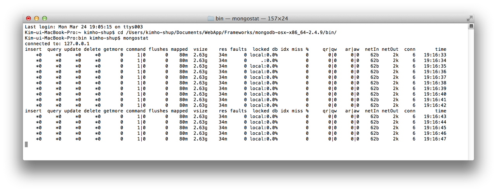
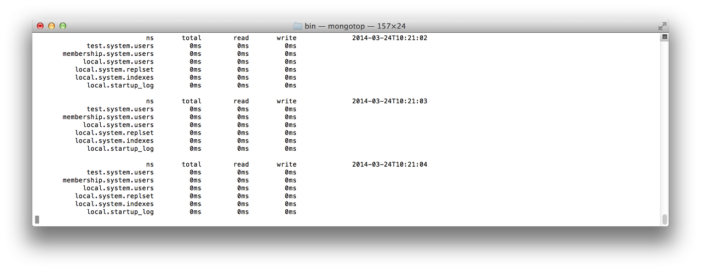

MongoDB를 활용한 개발자가 아닌 관리자라면 성능과 헬스를 모니터링하는 것이 중요합니다.
MongoDB의 모니터링 전략은 세 가지 정도로 요약할 수 있습니다:
- 데이터베이스의 활동을 실시간으로 리포팅하는 유틸리티를 활용하는 방법입니다. 이 유틸리티는 MongoDB 다운로드 패키지에 포함되어 있습니다.
- 데이터베이스 명령을 활용하는 방법입니다. 이 명령을 통해 현재 데이터베이스의 상태에 대한 통계를 확인할 수 있습니다.
- MMS 모니터링 서비스(MMS Monitoring Service)를 활용하는 방법입니다. MMS는 "MongoDB Management Service"의 약자이며, 데이터에 대한 시각화 및 경고 등을 제공하는 서비스이자, MongoDB가 제공하는 무료 서비스입니다.
- 유틸리티
MongoDB 배포 패키지에 포함된 유틸리티이며 실시간으로 현재의 성능과 활동을 리포팅 해준비다.
[MongoDB_path]/bin 폴더에 있는 실행파일입니다.
-
mongostat는 4.4 이전 버전에는 MongoDB Server 설치 시 함께 설치되었으나, 4.4부터는 이로부터 분리되어 별도록 Database Tools를 설치하여야 사용할 수 있습니다. Database Tools를 설치하려면 이 곳을 방문하시기 바랍니다.mongostat은 데이터베이스 연산의 개수를 타입(예를 들어,insert,query,update,delete등)으로 출력합니다. 이들의 개수는 서버에서 부하 분산에 대해 보고합니다. 그림 1. mongostat실행 예. -
mongostop역시 4.4 이전 버전에는 MongoDB Server 설치 시 함께 설치되었으나, 4.4부터는 이로부터 분리되어 별도록 Database Tools를 설치하여야 사용할 수 있습니다. Database Tools를 설치하려면 이 곳을 방문하시기 바랍니다.mongotop은 각 컬렉션을 기반으로 하는 통계를 보고합니다. MongoDB의 현재 활동을 기록하고 보고합니다. 그림 2. mongotop 실행 예.
- REST 인터페이스
MongoDB는 모니터링 및 경고 스크립트 작성 또는 관리자 업무에 유용한 간단한 REST 인터페이스를 제공합니다.
REST를 활성화하려면 mongod 명령에 --rest 옵션을 지정합니다. 디폴트는 REST 명령이 비활성화입니다.
mongod --rest
예를 들어, 디폴트로 지정된 포트번호인 27017로 서버가 실행된다고 할 때, 이 번호에 1000을 더한 값의 포트번호로 REST 인터페이스를 사용할 수 있습니다.
프로토타입은 다음과 같습니다:
http://127.0.0.1:28017/databaseName/collectionName/
현재 test라는 db에 users 컬렉션이 다음과 같이 저장되어 있다고 하겠습니다:
> db.users.find().pretty()
{ "_id" : "mike", "display_name" : "Mike D" }
{ "_id" : "kristina", "display_name" : "Kristina C" }
브라우저 주소 창에 다음과 같이 입력하면:
http://127.0.0.1:28017/test/users/
JSON 포맷 형태로 users 컬렉션의 내용이 출력됩니다.
만약 다음과 같이 shell에서 수행한 동일한 명령을 REST 인터페이스에서 실행하려면:
> db.users.findOne({_id: "kristina"})
{ "_id" : "kristina", "display_name" : "Kristina C" }
REST 인터페이스에 대한 보다 자세한 내용은 MongoDB의 REST 인터페이스 관련 도큐먼트를 참고합니다.
- HTTP 콘솔
HTTP 콘솔은 MongoDB가 제공하는 웹 인터페이스로서 간단한 웹 페이지 형태로 진단 및 모니터링 정보를 출력합니다.
웹 브라우저의 주소창에서 http://localhost:<port> 형태로 입력하면 되며, 포트번호는 mongod 서버 실행 시 지정한 포트번호에 1000을 더하면 됩니다.
예를 들어, 별도의 포트번호 지정이 없으면 디폴트로 27017로 포트번호가 지정되며, HTTP 콘솔을 확인하려면, 웹 브라우저 주소창에 http://localhost:28017을 입력합니다.
관련 명령어
-
serverStatusserverStatus명령은 데이터베이스의 상태에 대한 전반적인 정보를 출력합니다. 이 정보에는 디스크 사용, 메모리 사용, 연결, 저널링, 인덱스 접근 등이 포함되어 있습니다.
> db.serverStatus()
{
"host" : "gchoi-ui-MacBook-Pro.local",
"version" : "2.4.9",
"process" : "mongod",
"pid" : 8376,
"uptime" : 1887,
"uptimeMillis" : NumberLong(1886281),
"uptimeEstimate" : 1718,
"localTime" : ISODate("2014-03-24T11:12:19.200Z"),
"asserts" : {
"regular" : 0,
"warning" : 0,
"msg" : 0,
"user" : 0,
"rollovers" : 0
},
"backgroundFlushing" : {
"flushes" : 31,
"total_ms" : 31,
"average_ms" : 1,
"last_ms" : 1,
"last_finished" : ISODate("2014-03-24T11:11:52.775Z")
},
"connections" : {
"current" : 6,
"available" : 198,
"totalCreated" : NumberLong(20)
},
"cursors" : {
"totalOpen" : 0,
"clientCursors_size" : 0,
"timedOut" : 0
},
"dur" : {
"commits" : 29,
"journaledMB" : 0,
"writeToDataFilesMB" : 0,
"compression" : 0,
"commitsInWriteLock" : 0,
"earlyCommits" : 0,
"timeMs" : {
"dt" : 3039,
"prepLogBuffer" : 0,
"writeToJournal" : 0,
"writeToDataFiles" : 0,
"remapPrivateView" : 0
}
},
"extra_info" : {
"note" : "fields vary by platform",
"page_faults" : 17
},
"globalLock" : {
"totalTime" : NumberLong(1886281000),
"lockTime" : NumberLong(37925),
"currentQueue" : {
"total" : 0,
"readers" : 0,
"writers" : 0
},
"activeClients" : {
"total" : 0,
"readers" : 0,
"writers" : 0
}
},
"indexCounters" : {
"accesses" : 3,
"hits" : 3,
"misses" : 0,
"resets" : 0,
"missRatio" : 0
},
"locks" : {
"." : {
"timeLockedMicros" : {
"R" : NumberLong(90161),
"W" : NumberLong(37925)
},
"timeAcquiringMicros" : {
"R" : NumberLong(53850),
"W" : NumberLong(6218)
}
},
"admin" : {
"timeLockedMicros" : {
},
"timeAcquiringMicros" : {
}
},
"local" : {
"timeLockedMicros" : {
"r" : NumberLong(5576),
"w" : NumberLong(0)
},
"timeAcquiringMicros" : {
"r" : NumberLong(463),
"w" : NumberLong(0)
}
},
"test" : {
"timeLockedMicros" : {
"r" : NumberLong(5740),
"w" : NumberLong(0)
},
"timeAcquiringMicros" : {
"r" : NumberLong(153),
"w" : NumberLong(0)
}
}
},
"network" : {
"bytesIn" : 741,
"bytesOut" : 863,
"numRequests" : 9
},
"opcounters" : {
"insert" : 1,
"query" : 67,
"update" : 0,
"delete" : 0,
"getmore" : 0,
"command" : 12
},
"opcountersRepl" : {
"insert" : 0,
"query" : 0,
"update" : 0,
"delete" : 0,
"getmore" : 0,
"command" : 0
},
"recordStats" : {
"accessesNotInMemory" : 1,
"pageFaultExceptionsThrown" : 1,
"local" : {
"accessesNotInMemory" : 0,
"pageFaultExceptionsThrown" : 0
},
"test" : {
"accessesNotInMemory" : 1,
"pageFaultExceptionsThrown" : 1
}
},
"writeBacksQueued" : false,
"mem" : {
"bits" : 64,
"resident" : 35,
"virtual" : 2850,
"supported" : true,
"mapped" : 160,
"mappedWithJournal" : 320
},
"metrics" : {
"document" : {
"deleted" : NumberLong(0),
"inserted" : NumberLong(1),
"returned" : NumberLong(4),
"updated" : NumberLong(0)
},
"getLastError" : {
"wtime" : {
"num" : 0,
"totalMillis" : 0
},
"wtimeouts" : NumberLong(0)
},
"operation" : {
"fastmod" : NumberLong(0),
"idhack" : NumberLong(3),
"scanAndOrder" : NumberLong(0)
},
"queryExecutor" : {
"scanned" : NumberLong(97)
},
"record" : {
"moves" : NumberLong(0)
},
"repl" : {
"apply" : {
"batches" : {
"num" : 0,
"totalMillis" : 0
},
"ops" : NumberLong(0)
},
"buffer" : {
"count" : NumberLong(0),
"maxSizeBytes" : 268435456,
"sizeBytes" : NumberLong(0)
},
"network" : {
"bytes" : NumberLong(0),
"getmores" : {
"num" : 0,
"totalMillis" : 0
},
"ops" : NumberLong(0),
"readersCreated" : NumberLong(0)
},
"oplog" : {
"insert" : {
"num" : 0,
"totalMillis" : 0
},
"insertBytes" : NumberLong(0)
},
"preload" : {
"docs" : {
"num" : 0,
"totalMillis" : 0
},
"indexes" : {
"num" : 0,
"totalMillis" : 0
}
}
},
"ttl" : {
"deletedDocuments" : NumberLong(0),
"passes" : NumberLong(31)
}
},
"ok" : 1
}
-
dbStatsdbStats명령은 데이터 사이즈, 스토리지 사용 및 데이터 볼륨 등에 대한 정보를 출력합니다.
> db.stats()
{
"db" : "test",
"collections" : 6,
"objects" : 28,
"avgObjSize" : 55.42857142857143,
"dataSize" : 1552,
"storageSize" : 40960,
"numExtents" : 7,
"indexes" : 3,
"indexSize" : 24528,
"fileSize" : 201326592,
"nsSizeMB" : 16,
"dataFileVersion" : {
"major" : 4,
"minor" : 5
},
"ok" : 1
}
-
collStatscollStats는 컬렉션 레벨에서의 dbStats와 기능이 유사합니다. 컬렉션의 도큐먼트 개수, 컬렉션 사이즈 등 다양한 정보를 제공합니다.
> db.users.stats()
{
"ns" : "test.users",
"count" : 2,
"size" : 100,
"avgObjSize" : 50,
"storageSize" : 4096,
"numExtents" : 1,
"nindexes" : 1,
"lastExtentSize" : 4096,
"paddingFactor" : 1,
"systemFlags" : 1,
"userFlags" : 0,
"totalIndexSize" : 8176,
"indexSizes" : {
"_id_" : 8176
},
"ok" : 1
}
써드파티 도구들
MongoDB의 모니터링을 지원하는 다양한 써드파티 도구들이 존재하며, MongoDB를 직접 지원하거나 플러그인을 통해 지원하기도 합니다.
다음의 써드파티 도구들은 서버에서 설치, 환경설정, 관리되는 것들이며 대부분 오픈소스 형태로 제공됩니다.